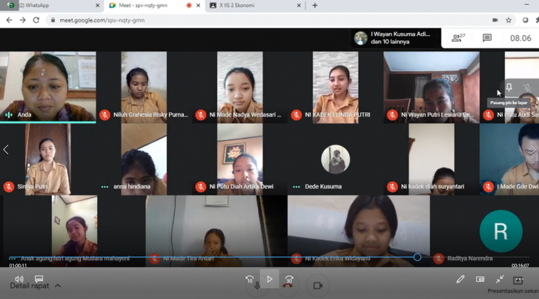

Bagaimana cara mengajar yang menarik di era pandemi seperti sekarang ini menjadi tantangan bagi semua guru di indonesia. Pembelajaran daring adalah salah satu solusi supaya siswa tetap mendapatkan haknya untuk belajar. Perkembangan teknologi yang menghadirkan berbagai macam aplikasi pendukung pembelajaran dapat membantu Guru dalam menerapkan teknik mengajar yang asyik.
Bagaimana cara mengajarkan yang menyenangkan dan tidak membuat siswa bosan?
Semua Guru pasti menyadari pembelajaran daring sangat berbeda dengan pembelajaran luring. Salah satunya waktu berinteraksi dengan siswa menjadi sangat terbatas. Sebagai guru yang baik, pasti ingin semua siswa dapat mengikuti pelajaran dengan maksimal. Salah satu kunci untuk mencapai tujuan tersebut adalah dengan menyederhanakan instruksi yang kita berikan.
Berada di depan komputer atau smartphone dalam waktu yang lama sudah menjadi tantangan bagi siswa. Jika ditambah dengan penjelasan dan instruksi-instruksi yang bertele-tele akan membuat siswa semakin bingung. Jadi, kita harus ingat bahwa "the key is the simplicity".
Belajar online atau daring tidak akan menyenangkan jika guru hanya memberikan tugas. Meskipun tidak dapat bertatap muka secara langsung, kita dapat memanfaatkan kecanggihan teknologi untuk berinteraksi langsung secara virtual. Banyak sekali aplikasi yang mendukung proses pembelajaran online ini. Tidak akan mudah pada awalnya. Tetapi dengan pikiran yang terbuka dan kemauan keras untuk belajar hal-hal baru, membuat kita tidak akan gaptek lagi dan berkembang.
Sebagai guru yang baik, pasti ingin semua siswa aktif dalam mengikuti pembelajaran di kelas. Saat mengajar, mungkin tidak bisa menunjukkan ekspresi menggunakan seluruh anggota tubuh. Seperti kita semua ketahui bahwa saat belajar online guru dan siswa hanya dapat melihat kepala masing-masing saja.
Supaya pembelajaran tetap menarik dan siswa dapat belajar dengan asyik, Tunjukkan ekspresi dengan kerlingan mata, perubahan suara, dan juga mimik wajah. Jika kita menerangkan dengan ekspresi datar, dijamin siswa akan merasa cepat bosan.
Apa yang dilakukan oleh guru kita dahulu tidak bisa menjadi patokan utama untuk diaplikasikan kepada siswa kita saat ini. Banyak faktor yang membuat keadaan menjadi sangat berbeda. Empati sangat penting bagi Guru Pintar saat mendesain pembelajaran, menyikapi siswa secara individu, maupun menyelesaikan masalah yang muncul saat mengajar.
Cara mengajar dengan mengedepankan empati membuat Guru Pintar tidak mudah menghakimi. Empati membuat Guru Pintar lebih jeli melihat permasalahan terutama yang dialami siswa dan juga bagaimana membantu mereka mengatasi masalah tersebut dengan tepat.
Menjadi kreatif adalah salah satu cara mengajar menjadi menarik. Saat belajar dilakukan di rumah, kita wajib berpikir out of the box supaya siswa tidak kabur saat kita mengajar. Kombinasikan pembelajaran synchronous dan asynchronous. Gunakan media yang menarik seperti video, infografis, gambar, presentasi, dan lain sebagainya. Jangan ragu-ragu jika ingin menggunakan quiz-quiz interaktif yang bisa dengan mudah diakses melalui internet jika memungkinkan. Melihat siswa tersenyum dan mampu menyerap pelajaran dengan baik adalah kepuasan tersendiri.
Teknik mengajar asyik lainnya adalah jangan hanya duduk atau tetap pada satu posisi yang sama dalam waktu lama. Kita dapat mengajak siswa untuk melakukan senam-senam kecil, menari, menggerak-gerakkan anggota tubuh, dan lain sebagainya. Hal ini sangat membantu siswa meredakan rasa bosan yang melanda dan juga melatih melemaskan otot-otot yang kaku saat belajar. Lakukan hal ini secara rutin bisa sebagai ice breaking ataupun mengisi jeda-jeda saat pembelajaran berlangsung.
Siswa akan cepat bosan jika hanya duduk dan mendengarkan guru bicara. Siswa juga berhak mendapatkan kesempatan untuk berbicara dan mengemukakan ide atau pendapatnya di depan teman-teman. Bagaimana jika siswanya terlalu banyak? kita dapat membuat kelompok kecil-kecil yang memungkinkan setiap anak memiliki kesempatan berbicara. Jika dalam kelompok besar, mereka akan merasa menunggu giliran terlalu lama. Selain itu, kelompok kecil memudahkan untuk memotivasi siswa yang kurang percaya diri atau butuh latihan untuk mngekspresikan diri.
Cara mengajar yang menarik ternyata tidak rumit ya, Guru Pintar . Yuk! Mulai kita dicoba di kelas. Dan jangan lupa untuk sharing masalah-masalah saat mengajar di Era Pandemi Covid-19 ini.
Pembelajaran Jarak Jauh selama Masa Pandemi Covid-19
Guru sebagai ujung tombak pendidikan melakukan berbagai upaya seperti menerapkan pembelajaran jarak jauh (PJJ) melalui media Group Whatsapp, Google Classroom, Moodle, dan aplikasi belajar online lainnya. Untuk pembelajaran secara sinkronus guru juga memanfaatkan media Google Meet, Zoom Cloud Meeting, Cisco Webex dan lain sebagainya. Saat ini banyak sekali sumber belajar online serta konten ilmu yang terdapat di internet.
 www.sma1-sukawati.sch.id/berita/5fc3326c6131645f460003bb/pembelajaran-jarak-jauh-pjj-selama-masa-pandemi-covid19